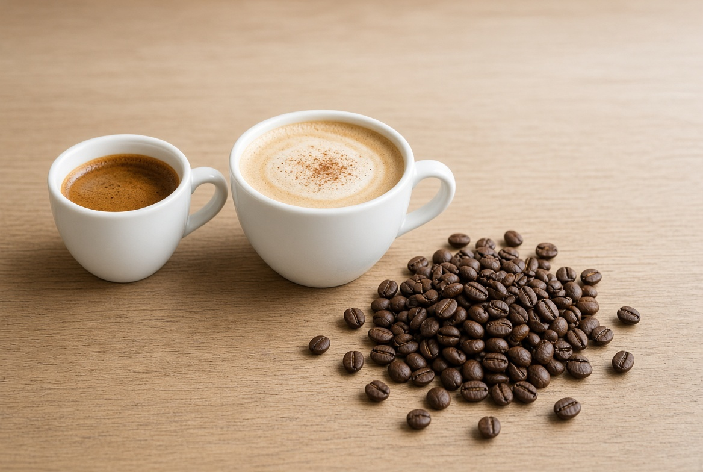
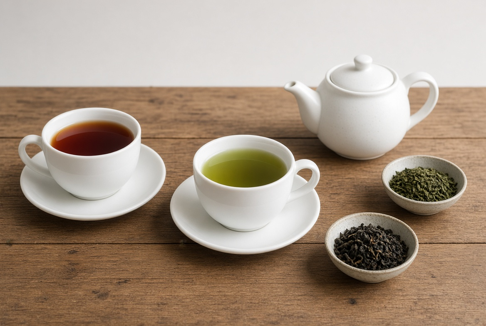

Our premium Arabica coffee is carefully selected from high-quality coffee-growing regions and has a rich and smooth flavour.
Aroma Coffee and Tea House offers a variety of premium coffee products prepared from carefully selected coffee beans.
Our premium Arabica coffee is carefully selected from high-quality coffee-growing regions and has a rich and smooth flavour.
Our Espresso coffee delivers a strong and concentrated taste that is perfect for coffee lovers who enjoy a bold flavour.
Our Cappuccino combines espresso, steamed milk, and milk foam to create a creamy and satisfying coffee experience.

We also provide a range of refreshing tea products made from quality tea leaves.
Our Kenyan Black Tea provides a rich aroma and refreshing taste, making it ideal for everyday enjoyment.
Our Green Tea is carefully processed to preserve its natural flavour and refreshing qualities.
Our Herbal Tea is made from selected herbs and natural ingredients, offering a pleasant and relaxing beverage.
